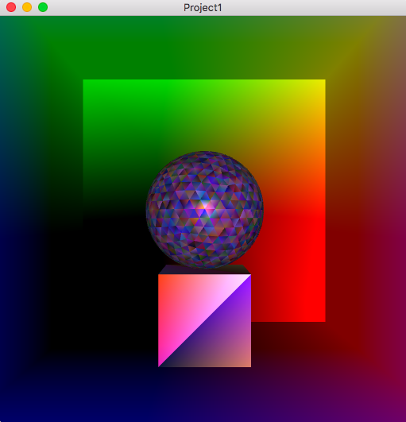
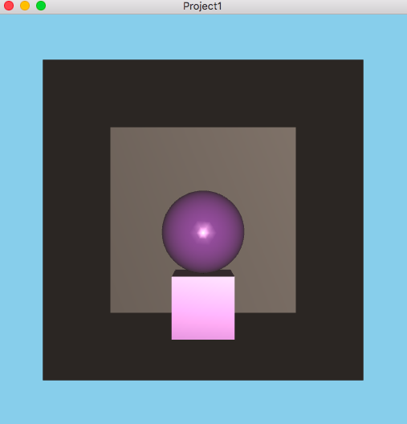

CS6610 Project 1- Shader based Geometry and Lighting
Project 1 required us to render a simple scene composed of a room, a cube placed at the centre of the room and a sphere placed on top of the cube. I used superbible 7 objects to create my scene and in addition I also added support to load obj files using tinyObjLoader. The program supports per vertex, per fragment shading, single color, multi colored objects, camera movement using arcball mouse interactions and face culling to see the objects inside the room. It took me about 4 hours to complete the assignment where in I spent most of the time getting a clean openGL environment setup and fixing compilation issues on OSX . I'm statically linking to glfw3 for windowing, and libglm for math computations.
Scene with color attrib and per vertex Phong shading
Scene with single color and per fragment Phong shading
| Key | Operation |
|---|---|
| 'v' | Switch between per vertex to per fragment Phong shading |
| 'c' | Switch between single and multi color modes |
| 'm' | Switch between color vertex attrib and color generated in the shader |
| 'r' | Reset camera position |
| Button | Operation |
|---|---|
| 'Left' | Rotate the camera |
| 'Right' | Pan |
| 'Shift+Right' | Zoom in/out |
Video showing mouse interactions, various color and shading modes
Learnings
How to run the program?
Run build.sh to compile the code and run.sh to run the program.
{kind=link}
{kind=link}